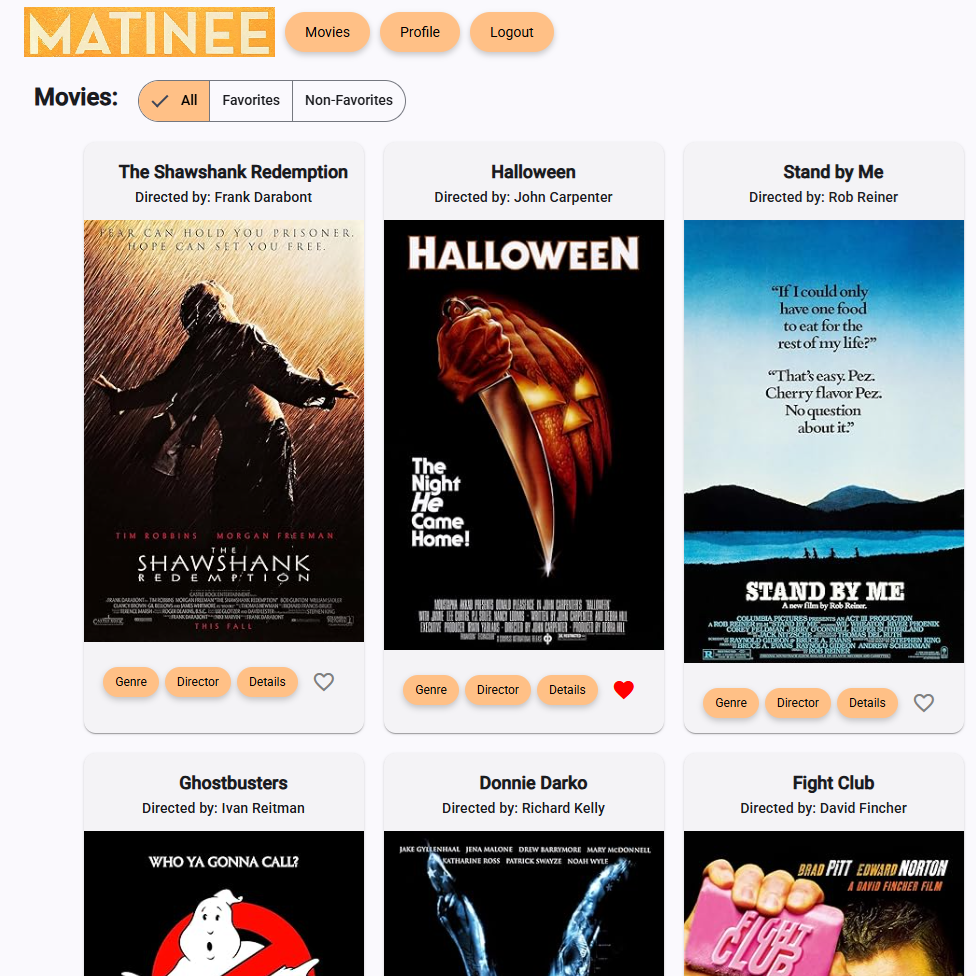

Project Portfolio

This project was to create a website that would be used as an online portfolio to showcase other projects I completed throughout my courses at Career Foundry. It was to be built using HTML/CSS and introduce SVG images as well as customizing/animating the SVG. I learned about and used a Kanban board to manage and track my goals throughout the portfolio development project as well.
Code RepositoryPokedex App

A simple web application that loads data from an external API and enables the viewing of basic data points about a Pokémon selected from a listing. jQuery and Bootstrap were used for page layout and manipulation of elements.
Application built using HTML, CSS and JavaScript (Bootstrap, jQuery)
Live ApplicationCode Repository
Matinee

The project consists of two parts: a backend API application which implements a RESTful API and a client frontend that accesses it. The application deals with movies and users can register and login to their account to view a movie list, view movie details, add/remove movies from a list of favorites, update account information and delete their account if desired.
API backend built using Javascript, Node.js, Express, MongoDB, Postman (testing) & Heroku/AWS-EC2 (hosting).
Frontend built using Javascript, React, React-Bootstrap, Redux, Parcel/gh-pages (build automation)
Live ApplicationBackend Code Repository
Frontend Code Repository
Meet App

This project was aimed at building a serverless, progressive web application with React using a test-driven development approach. The application uses the Google Calendar API to fetch upcoming events. Google OAuthentication used to gain authorization for the application. Domains registered with Google for improved search results for Meet application and GitHub repository.
Application built with React, Serverless/AWS Lambda functions (authorization/fetch), Recharts (visualizations), Vite (build automation)
Testing with Jest, Jest-Cucumber, Puppetteer
Live ApplicationCode Repository
Chatty Catty
This project involved building a native chat application for mobile devices using React Native. The application allows users to send text chats, images and share their location. Chat history will be preserved in an online database as well as on the device for limited offline use.
Applicaiton built using React Native, React Native GiftedChat, Expo v53 (build automation), Google Firebase Authentication, Google Firestore Database
Expo Go v53 used for testing on mobile devices.
App DemoCode Repository
Matinee - Angular Rewrite
This project was to rewrite the Matinee application (React) in Angular and make use of Angular Material in the project. The backend API application would remain the same as the React Matinee application and the Angular Matinee would make use of it.
Application built with Angular, Angular Material, TypeScript. A Kanban board on Trello was used and cards tracked tasks to complete for components, documentation and portfolio updates for this project.
Live ApplicationCode Repository